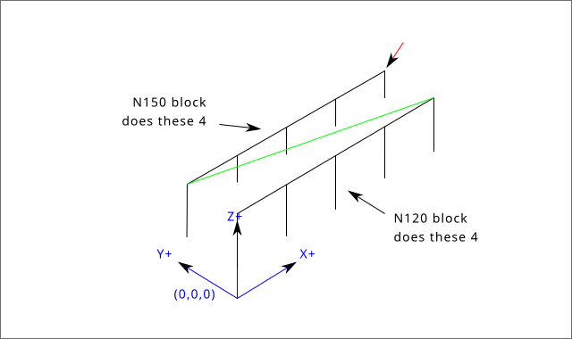
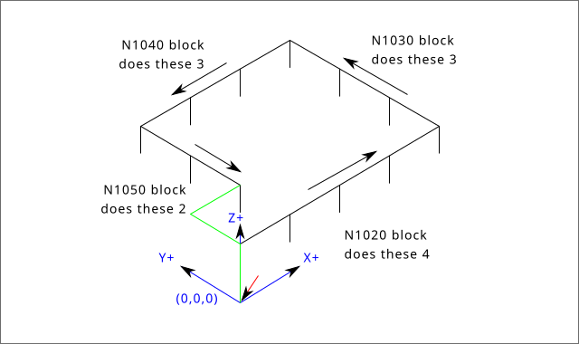
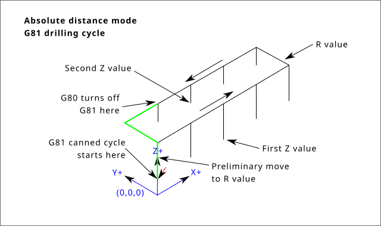
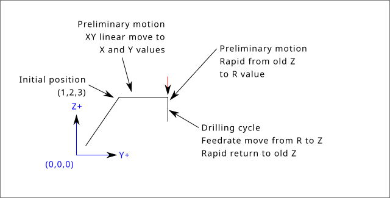
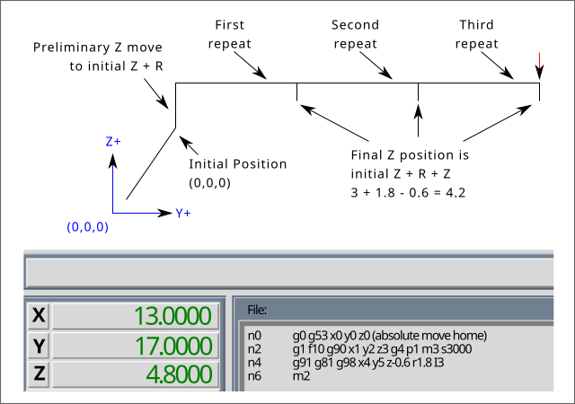
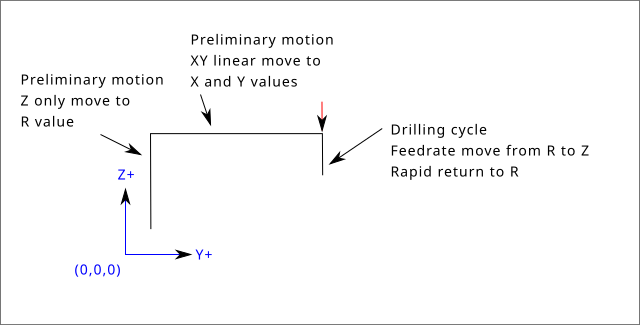
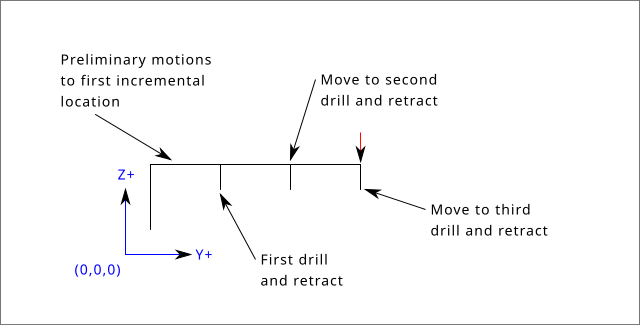

1. Conventions
Conventions used in this section
In the G-code prototypes the hyphen (-) stands for a real value and (<>) denotes an optional item.
If L- is written in a prototype the - will often be referred to as the L number, and so on for any other letter.
In the G-code prototypes the word axes stands for any axis as defined in your configuration.
An optional value will be written like this <L- >.
A real value may be:
-
An explicit number, 4
-
An expression, [2+2]
-
A parameter value, #88
-
A unary function value, acos[0]
In most cases, if axis words are given (any or all of X Y Z A B C U V W), they specify a destination point.
Axis numbers are in the currently active coordinate system, unless explicitly described as being in the absolute coordinate system.
Where axis words are optional, any omitted axes will retain their original value.
Any items in the G-code prototypes not explicitly described as optional are required.
The values following letters are often given as explicit numbers. Unless stated otherwise, the explicit numbers can be real values. For example, G10 L2 could equally well be written G[2*5] L[1+1]. If the value of parameter 100 were 2, G10 L#100 would also mean the same.
If L- is written in a prototype the - will often be referred to as the L number, and so on for any other letter.
2. G-Code Quick Reference Table
| Code | Description |
|---|---|
Coordinated Motion at Rapid Rate |
|
Coordinated Motion at Feed Rate |
|
Coordinated Helical Motion at Feed Rate |
|
Dwell |
|
Cubic Spline |
|
Quadratic B-Spline |
|
NURBS, add control point |
|
Diameter Mode (lathe) |
|
Radius Mode (lathe) |
|
Reload Tool Table Data |
|
Set Tool Table Entry |
|
Set Tool Table, Calculated, Workpiece |
|
Set Tool Table, Calculated, Fixture |
|
Coordinate System Origin Setting |
|
Coordinate System Origin Setting Calculated |
|
Plane Select |
|
Set Units of Measure |
|
Go to Predefined Position |
|
Go to Predefined Position |
|
Spindle Synchronized Motion |
|
Rigid Tapping |
|
Probing |
|
Cancel Cutter Compensation |
|
Cutter Compensation |
|
Dynamic Cutter Compensation |
|
Use Tool Length Offset from Tool Table |
|
Dynamic Tool Length Offset |
|
Apply additional Tool Length Offset |
|
Cancel Tool Length Offset |
|
Local Coordinate System Offset |
|
Move in Machine Coordinates |
|
Select Coordinate System (1 - 9) |
|
Exact Path Mode |
|
Exact Stop Mode |
|
Path Control Mode with Optional Tolerance |
|
Lathe finishing cycle |
|
Lathe roughing cycle |
|
Drilling Cycle with Chip Breaking |
|
Left-hand Tapping Cycle with Dwell |
|
Multi-pass Threading Cycle (Lathe) |
|
Cancel Motion Modes |
|
Drilling Cycle |
|
Drilling Cycle with Dwell |
|
Drilling Cycle with Peck |
|
Right-hand Tapping Cycle with Dwell |
|
Boring Cycle, No Dwell, Feed Out |
|
Boring Cycle, Stop, Rapid Out |
|
Back-boring Cycle (not yet implemented) |
|
Boring Cycle, Stop, Manual Out (not yet implemented) |
|
Boring Cycle, Dwell, Feed Out |
|
Distance Mode |
|
Arc Distance Mode |
|
Coordinate System Offset |
|
Cancel G92 Offsets |
|
Restore G92 Offsets |
|
Feed Modes |
|
Spindle Control Mode, Constant Surface vs Rotation Speed (IPM or m/min vs RPM) |
|
Canned Cycle Z Retract Mode |
3. G0 Rapid Move
G0 <axes>For rapid motion, program G0 axes, where all the axis words are optional. The G0 is optional if the current motion mode is G0. This will produce coordinated motion to the destination point at the maximum rapid rate (or slower). G0 is typically used as a positioning move.
3.1. Rapid Velocity Rate
The MAX_VELOCITY setting in the INI file [TRAJ] section defines the maximumrapid traverse rate. The maximum rapid traverse rate can be higher than the individual axes MAX_VELOCITY setting during a coordinated move. The maximum rapid traverse rate can be slower than the MAX_VELOCITY setting in the [TRAJ] section if an axis MAX_VELOCITY or trajectory constraints limit it.
G90 (set absolute distance mode)
G0 X1 Y-2.3 (Rapid linear move from current location to X1 Y-2.3)
M2 (end program)If cutter compensation is active, the motion will differ from the above; see the Cutter Compensation section.
If G53 is programmed on the same line, the motion will also differ; see the G53 section for more information.
The path of a G0 rapid motion can be rounded at direction changes and depends on the trajectory control settings and maximum acceleration of the axes.
It is an error if:
-
An axis letter is without a real value.
-
An axis letter is used that is not configured.
4. G1 Linear Move
G1 axesFor linear (straight line) motion at programmed feed rate (for cutting or not), program G1 'axes', where all the axis words are optional. The G1 is optional if the current motion mode is G1. This will produce coordinated motion to the destination point at the current feed rate (or slower).
G90 (set absolute distance mode)
G1 X1.2 Y-3 F10 (linear move at a feed rate of 10 from current position to X1.2 Y-3)
Z-2.3 (linear move at same feed rate from current position to Z-2.3)
Z1 F25 (linear move at a feed rate of 25 from current position to Z1)
M2 (end program)If cutter compensation is active, the motion will differ from the above; see the Cutter Compensation section.
If G53 is programmed on the same line, the motion will also differ; see the G53 section for more information.
It is an error if:
-
No feed rate has been set.
-
An axis letter is without a real value.
-
An axis letter is used that is not configured
5. G2, G3 Arc Move
G2 or G3 axes offsets (center format)
G2 or G3 axes R- (radius format)
G2 or G3 offsets|R- <P-> (full circles)A circular or helical arc is specified using either G2 (clockwise arc) or G3 (counterclockwise arc) at the current feed rate. The direction (CW, CCW) is as viewed from the positive end of the axis about which the circular motion occurs.
The axis of the circle or helix must be parallel to the X, Y, or Z axis of the machine coordinate system. The axis (or, equivalently, the plane perpendicular to the axis) is selected with G17 (Z-axis, XY-plane), G18 (Y-axis, XZ-plane), or G19 (X-axis, YZ-plane). Planes 17.1, 18.1, and 19.1 are not currently supported. If the arc is circular, it lies in a plane parallel to the selected plane.
To program a helix, include the axis word perpendicular to the arc plane, for example, if in the G17 plane, include a Z word. This will cause the Z axis to move to the programmed value during the circular XY motion.
To program an arc that gives more than one full turn, use the P word specifying the number of full turns plus the programmed arc. The P word must be an integer. If P is unspecified, the behavior is as if P1 was given that is, only one full or partial turn will result. For example, if a 180 degree arc is programmed with a P2, the resulting motion will be 1 1/2 rotations. For each P increment above 1 an extra full circle is added to the programmed arc. Multi turn helical arcs are supported and give motion useful for milling holes or threads.
|
Warning
|
If the pitch of the helix is very small (less than the naive CAM tolerance) then the helix might be converted into a straight line. Bug #222 |
If a line of code makes an arc and includes rotary axis motion, the rotary axes turn at a constant rate so that the rotary motion starts and finishes when the XYZ motion starts and finishes. Lines of this sort are hardly ever programmed.
If cutter compensation is active, the motion will differ from the above; see the Cutter Compensation section.
The arc center is absolute or relative as set by G90.1 or G91.1 respectively.
Two formats are allowed for specifying an arc: Center Format and Radius Format.
It is an error if:
-
No feed rate has been set.
-
The P word is not an integer.
5.1. Center Format Arcs
Center format arcs are more accurate than radius format arcs and are the preferred format to use.
The end point of the arc along with the offset to the center of the arc from the current location are used to program arcs that are less than a full circle. It is OK if the end point of the arc is the same as the current location.
The offset to the center of the arc from the current location and optionally the number of turns are used to program full circles.
When programming arcs an error due to rounding can result from using a precision of less than 4 decimal places (0.0000) for inch and less than 3 decimal places (0.000) for millimeters.
Arc center offsets are a relative distance from the start location of the arc. Incremental Arc Distance Mode is default.
One or more axis words and one or more offsets must be programmed for an arc that is less than 360 degrees.
No axis words and one or more offsets must be programmed for full circles. The P word defaults to 1 and is optional.
For more information on 'Incremental Arc Distance Mode see the G91.1 section.
Arc center offsets are the absolute distance from the current 0 position of the axis.
One or more axis words and both offsets must be programmed for arcs less than 360 degrees.
No axis words and both offsets must be programmed for full circles. The P word defaults to 1 and is optional.
For more information on 'Absolute Arc Distance Mode see the G90.1 section.
G2 or G3 <X- Y- Z- I- J- P->-
Z - helix
-
I - X offset
-
J - Y offset
-
P - number of turns
G2 or G3 <X- Z- Y- I- K- P->-
Y - helix
-
I - X offset
-
K - Z offset
-
P - number of turns
G2 or G3 <Y- Z- X- J- K- P->-
X - helix
-
J - Y offset
-
K - Z offset
-
P - number of turns
It is an error if:
-
No feed rate is set with the F word.
-
No offsets are programmed.
-
When the arc is projected on the selected plane, the distance from the current point to the center differs from the distance from the end point to the center by more than (.05 inch/.5 mm) OR ((.0005 inch/.005mm) AND .1% of radius).
Deciphering the Error message Radius to end of arc differs from radius to start:
-
start - the current position
-
center - the center position as calculated using the i, j, or k words
-
end - the programmed end point
-
r1 - radius from the start position to the center
-
r2 - radius from the end position to the center
5.2. Center Format Examples
Calculating arcs by hand can be difficult at times. One option is to draw the arc with a CAD program to get the coordinates and offsets. Keep in mind the tolerance mentioned above, you may have to change the precision of your CAD program to get the desired results. Another option is to calculate the coordinates and offset using formulas. As you can see in the following figures a triangle can be formed from the current position the end position and the arc center.
In the following figure you can see the start position is X0 Y0, the end position is X1 Y1. The arc center position is at X1 Y0. This gives us an offset from the start position of 1 in the X axis and 0 in the Y axis. In this case only an I offset is needed.
G0 X0 Y0
G2 X1 Y1 I1 F10 (clockwise arc in the XY plane)In the next example we see the difference between the offsets for Y if we are doing a G2 or a G3 move. For the G2 move the start position is X0 Y0, for the G3 move it is X0 Y1. The arc center is at X1 Y0.5 for both moves. The G2 move the J offset is 0.5 and the G3 move the J offset is -0.5.
G0 X0 Y0
G2 X0 Y1 I1 J0.5 F25 (clockwise arc in the XY plane)
G3 X0 Y0 I1 J-0.5 F25 (counterclockwise arc in the XY plane)In the next example we show how the arc can make a helix in the Z axis by adding the Z word.
G0 X0 Y0 Z0
G17 G2 X10 Y16 I3 J4 Z-1 (helix arc with Z added)In the next example we show how to make more than one turn using the P word.
G0 X0 Y0 Z0
G2 X0 Y1 Z-1 I1 J0.5 P2 F25In the center format, the radius of the arc is not specified, but it may be found easily as the distance from the center of the circle to either the current point or the end point of the arc.
5.3. Radius Format Arcs
G2 or G3 axes R- <P->-
R - radius from current position
It is not good practice to program radius format arcs that are nearly full circles or nearly semicircles because a small change in the location of the end point will produce a much larger change in the location of the center of the circle (and, hence, the middle of the arc). The magnification effect is large enough that rounding error in a number can produce out-of-tolerance cuts. For instance, a 1% displacement of the endpoint of a 180 degree arc produced a 7% displacement of the point 90 degrees along the arc. Nearly full circles are even worse. Other size arcs (in the range tiny to 165 degrees or 195 to 345 degrees) are OK.
In the radius format, the coordinates of the end point of the arc in the selected plane are specified along with the radius of the arc. Program G2 axes R- (or use G3 instead of G2 ). R is the radius. The axis words are all optional except that at least one of the two words for the axes in the selected plane must be used. The R number is the radius. A positive radius indicates that the arc turns through less than 180 degrees, while a negative radius indicates a turn of more than 180 degrees. If the arc is helical, the value of the end point of the arc on the coordinate axis parallel to the axis of the helix is also specified.
It is an error if:
-
both of the axis words for the axes of the selected plane are omitted
-
the end point of the arc is the same as the current point.
G17 G2 X10 Y15 R20 Z5 (radius format with arc)The above example makes a clockwise (as viewed from the positive Z-axis) circular or helical arc whose axis is parallel to the Z-axis, ending where X=10, Y=15, and Z=5, with a radius of 20. If the starting value of Z is 5, this is an arc of a circle parallel to the XY-plane; otherwise it is a helical arc.
6. G4 Dwell
G4 P--
P - seconds to dwell (floating point)
The P number is the time in seconds that all axes will remain unmoving. The P number is a floating point number so fractions of a second may be used. G4 does not affect spindle, coolant and any I/O.
G4 P0.5 (wait for 0.5 seconds before proceeding)It is an error if:
-
the P number is negative or not specified.
7. G5 Cubic Spline
G5 X- Y- <I- J-> P- Q--
I - X incremental offset from start point to first control point
-
J - Y incremental offset from start point to first control point
-
P - X incremental offset from end point to second control point
-
Q - Y incremental offset from end point to second control point
G5 creates a cubic B-spline in the XY plane with the X and Y axes only. P and Q must both be specified for every G5 command.
For the first G5 command in a series of G5 commands, I and J must both be specified. For subsequent G5 commands, either both I and J must be specified, or neither. If I and J are unspecified, the starting direction of this cubic will automatically match the ending direction of the previous cubic (as if I and J are the negation of the previous P and Q).
For example, to program a curvy N shape:
G90 G17
G0 X0 Y0
G5 I0 J3 P0 Q-3 X1 Y1A second curvy N that attaches smoothly to this one can now be made without specifying I and J:
G5 P0 Q-3 X2 Y2It is an error if:
-
P and Q are not both specified.
-
Just one of I or J are specified.
-
I or J are unspecified in the first of a series of G5 commands.
-
An axis other than X or Y is specified.
-
The active plane is not G17.
8. G5.1 Quadratic Spline
G5.1 X- Y- I- J--
I - X incremental offset from start point to control point
-
J - Y incremental offset from start point to control point
G5.1 creates a quadratic B-spline in the XY plane with the X and Y axis only. Not specifying I or J gives zero offset for the unspecified axis, so one or both must be given.
For example, to program a parabola, through the origin, from X-2 Y4 to X2 Y4:
G90 G17
G0 X-2 Y4
G5.1 X2 I2 J-8It is an error if:
-
both I and J offset are unspecified or zero
-
An axis other than X or Y is specified
-
The active plane is not G17
9. G5.2 G5.3 NURBS Block
G5.2 <P-> <X- Y-> <L->
X- Y- <P->
...
G5.3|
Warning
|
G5.2, G5.3 is experimental and not fully tested. |
G5.2 is for opening the data block defining a NURBS and G5.3 for closing the data block. In the lines between these two codes the curve control points are defined with both their related weights (P) and the parameter (L) which determines the order of the curve.
The current coordinate, before the first G5.2 command, is always taken as the first NURBS control point. To set the weight for this first control point, first program G5.2 P- without giving any X Y.
The default weight if P is unspecified is 1. The default order if L is unspecified is 3.
G0 X0 Y0 (rapid move)
F10 (set feed rate)
G5.2 P1 L3
X0 Y1 P1
X2 Y2 P1
X2 Y0 P1
X0 Y0 P2
G5.3
; The rapid moves show the same path without the NURBS Block
G0 X0 Y1
X2 Y2
X2 Y0
X0 Y0
M2
More information on NURBS can be found here:
10. G7 Lathe Diameter Mode
G7Program G7 to enter the diameter mode for axis X on a lathe. When in the diameter mode the X axis moves on a lathe will be 1/2 the distance to the center of the lathe. For example X1 would move the cutter to 0.500" from the center of the lathe thus giving a 1" diameter part.
11. G8 Lathe Radius Mode
G8Program G8 to enter the radius mode for axis X on a lathe. When in Radius mode the X axis moves on a lathe will be the distance from the center. Thus a cut at X1 would result in a part that is 2" in diameter. G8 is default at power up.
12. G10 L0 Reload Tool Table Data
G10 L0G10 L0 reload all tool table data. Requires that there is no current tool loaded in spindle.
|
Note
|
When using G10 L0, tool parameters (#5401-#5413) will be updated immediately and any altered tool diameters will be used for subsequent G41,42 cutter radius compensation commands. Existing G43 tool length compensation values will remain in effect until updated by new G43 commands. |
13. G10 L1 Set Tool Table
G10 L1 P- axes <R- I- J- Q->-
P - tool number
-
R - radius of tool
-
I - front angle (lathe)
-
J - back angle (lathe)
-
Q - orientation (lathe)
G10 L1 sets the tool table for the P tool number to the values of the words.
A valid G10 L1 rewrites and reloads the tool table for the specified tool.
G10 L1 P1 Z1.5 (set tool 1 Z offset from the machine origin to 1.5)
G10 L1 P2 R0.015 Q3 (lathe example setting tool 2 radius to 0.015 and orientation to 3)It is an error if:
-
Cutter Compensation is on
-
The P number is unspecified
-
The P number is not a valid tool number from the tool table
-
The P number is 0
For more information on cutter orientation used by the Q word, see the Lathe Tool Orientation diagram.
14. G10 L2 Set Coordinate System
G10 L2 P- <axes R->-
P - coordinate system (0-9)
-
R - rotation about the Z axis
G10 L2 offsets the origin of the axes in the coordinate system specified to the value of the axis word. The offset is from the machine origin established during homing. The offset value will replace any current offsets in effect for the coordinate system specified. Axis words not used will not be changed.
Program P0 to P9 to specify which coordinate system to change.
| P Value | Coordinate System | G-code |
|---|---|---|
0 |
Active |
n/a |
1 |
1 |
G54 |
2 |
2 |
G55 |
3 |
3 |
G56 |
4 |
4 |
G57 |
5 |
5 |
G58 |
6 |
6 |
G59 |
7 |
7 |
G59.1 |
8 |
8 |
G59.2 |
9 |
9 |
G59.3 |
Optionally program R to indicate the rotation of the XY axis around the Z axis. The direction of rotation is CCW as viewed from the positive end of the Z axis.
All axis words are optional.
Being in incremental distance mode (G91) has no effect on G10 L2.
Important Concepts:
-
G10 L2 Pndoes not change from the current coordinate system to the one specified by P, you have to use G54-59.3 to select a coordinate system. -
When a rotation is in effect jogging an axis will only move that axis in a positive or negative direction and not along the rotated axis.
-
If a G52 local offset or G92 origin offset was in effect before G10 L2, it will continue to be in effect afterwards.
-
When programming a coordinate system with R, any G52 or G92 will be applied after the rotation.
-
The coordinate system whose origin is set by a G10 command may be active or inactive at the time the G10 is executed. If it is currently active, the new coordinates take effect immediately.
It is an error if:
-
The P number does not evaluate to an integer in the range 0 to 9.
-
An axis is programmed that is not defined in the configuration.
G10 L2 P1 X3.5 Y17.2In the above example the origin of the first coordinate system (the one selected by G54) is set to be X=3.5 and Y=17.2. Because only X and Y are specified, the origin point is only moved in X and Y; the other coordinates are not changed.
G10 L2 P1 X0 Y0 Z0 (clear offsets for X,Y & Z axes in coordinate system 1)The above example sets the XYZ coordinates of the coordinate system 1 to the machine origin.
The coordinate system is described in the Coordinate System section.
15. G10 L10 Set Tool Table
G10 L10 P- axes <R- I- J- Q->-
P - tool number
-
R - radius of tool
-
I - front angle (lathe)
-
J - back angle (lathe)
-
Q - orientation (lathe)
G10 L10 changes the tool table entry for tool P so that if the tool offset is reloaded, with the machine in its current position and with the current G5x and G52/G92 offsets active, the current coordinates for the given axes will become the given values. The axes that are not specified in the G10 L10 command will not be changed. This could be useful with a probe move as described in the G38 section.
T1 M6 G43 (load tool 1 and tool length offsets)
G10 L10 P1 Z1.5 (set the current position for Z to be 1.5)
G43 (reload the tool length offsets from the changed tool table)
M2 (end program)It is an error if:
-
Cutter Compensation is on
-
The P number is unspecified
-
The P number is not a valid tool number from the tool table
-
The P number is 0
16. G10 L11 Set Tool Table
G10 L11 P- axes <R- I- J- Q->-
P - tool number
-
R - radius of tool
-
I - front angle (lathe)
-
J - back angle (lathe)
-
Q - orientation (lathe)
G10 L11 is just like G10 L10 except that instead of setting the entry according to the current offsets, it is set so that the current coordinates would become the given value if the new tool offset is reloaded and the machine is placed in the G59.3 coordinate system without any G52/G92 offset active.
This allows the user to set the G59.3 coordinate system according to a fixed point on the machine, and then use that fixture to measure tools without regard to other currently-active offsets.
It is an error if:
-
Cutter Compensation is on
-
The P number is unspecified
-
The P number is not a valid tool number from the tool table
-
The P number is 0
17. G10 L20 Set Coordinate System
G10 L20 P- axes-
P - coordinate system (0-9)
G10 L20 is similar to G10 L2 except that instead of setting the offset/entry to the given value, it is set to a calculated value that makes the current coordinates become the given value.
G10 L20 P1 X1.5 (set the X axis current location in coordinate system 1 to 1.5)It is an error if:
-
The P number does not evaluate to an integer in the range 0 to 9.
-
An axis is programmed that is not defined in the configuration.
18. G17 - G19.1 Plane Select
These codes set the current plane as follows:
-
G17 - XY (default)
-
G18 - ZX
-
G19 - YZ
-
G17.1 - UV
-
G18.1 - WU
-
G19.1 - VW
The UV, WU and VW planes do not support arcs.
It is a good idea to include a plane selection in the preamble of each G-code file.
The effects of having a plane selected are discussed in section G2 G3 Arcs and section G81 G89.
19. G20, G21 Units
-
G20 - to use inches for length units.
-
G21 - to use millimeters for length units.
It is a good idea to include units in the preamble of each G-code file.
20. G28, G28.1 Go/Set Predefined Position
|
Warning
|
Only use G28 when your machine is homed to a repeatable position and the desired G28 position has been stored with G28.1. |
G28 uses the values stored in parameters 5161-5169 as the X Y Z A B C U V W final point to move to. The parameter values are absolute machine coordinates in the native machine units as specified in the INI file. All axes defined in the INI file will be moved when a G28 is issued. If no positions are stored with G28.1 then all axes will go to the machine origin.
-
G28 - makes a rapid move from the current position to the absolute position of the values in parameters 5161-5166.
-
G28 axes - makes a rapid move to the position specified by axes including any offsets, then will make a rapid move to the absolute position of the values in parameters 5161-5166 for all axes specified. Any axis not specified will not move.
-
G28.1 - stores the current absolute position into parameters 5161-5166.
G28 Z2.5 (rapid to Z2.5 then to Z location specified in #5163)It is an error if :
-
Cutter Compensation is turned on
21. G30, G30.1 Go/Set Predefined Position
|
Warning
|
Only use G30 when your machine is homed to a repeatable position and the desired G30 position has been stored with G30.1. |
G30 functions the same as G28 but uses the values stored in parameters 5181-5189 as the X Y Z A B C U V W final point to move to. The parameter values are absolute machine coordinates in the native machine units as specified in the INI file. All axes defined in the INI file will be moved when a G30 is issued. If no positions are stored with G30.1 then all axes will go to the machine origin.
|
Note
|
G30 parameters will be used to move the tool when a M6 is programmed if TOOL_CHANGE_AT_G30=1 is in the [EMCIO] section of the INI file. |
-
G30 - makes a rapid move from the current position to the absolute position of the values in parameters 5181-5189.
-
G30 axes - makes a rapid move to the position specified by axes including any offsets, then will make a rapid move to the absolute position of the values in parameters 5181-5189 for all axes specified. Any axis not specified will not move.
-
G30.1 - stores the current absolute position into parameters 5181-5186.
G30 Z2.5 (rapid to Z2.5 then to the Z location specified in #5183)It is an error if :
-
Cutter Compensation is turned on
22. G33 Spindle Synchronized Motion
G33 X- Y- Z- K- $--
K - distance per revolution
For spindle-synchronized motion in one direction, code G33 X- Y- Z- K- where K gives the distance moved in XYZ for each revolution of the spindle. For instance, if starting at Z=0, G33 Z-1 K.0625 produces a 1 inch motion in Z over 16 revolutions of the spindle. This command might be part of a program to produce a 16TPI thread. Another example in metric, G33 Z-15 K1.5 produces a movement of 15mm while the spindle rotates 10 times for a thread of 1.5mm.
The (optional) $ argument sets which spindle the motion is synchronised to (default is zero). For example G33 Z10 K1 $1 will move the spindle in synchrony with the spindle.N.revs HAL pin value.
Spindle-synchronized motion waits for the spindle index and spindle at speed pins, so multiple passes line up. G33 moves end at the programmed endpoint. G33 could be used to cut tapered threads or a fusee.
All the axis words are optional, except that at least one must be used.
|
Note
|
K follows the drive line described by X- Y- Z-. K is not parallel to the Z axis if X or Y endpoints are used for example when cutting tapered threads. |
At the beginning of each G33 pass, LinuxCNC uses the spindle speed and the machine acceleration limits to calculate how long it will take Z to accelerate after the index pulse, and determines how many degrees the spindle will rotate during that time. It then adds that angle to the index position and computes the Z position using the corrected spindle angle. That means that Z will reach the correct position just as it finishes accelerating to the proper speed, and can immediately begin cutting a good thread.
The pin spindle.N.at-speed must be set or driven true for the motion to start. Additionally spindle.N.revs must increase by 1 for each revolution of the spindle and the spindle.N.index-enable pin must be connected to an encoder (or resolver) counter which resets index-enable once per rev.
See the Integrators Manual for more information on spindle synchronized motion.
G90 (absolute distance mode)
G0 X1 Z0.1 (rapid to position)
S100 M3 (start spindle turning)
G33 Z-2 K0.125 (move Z axis to -2 at a rate to equal 0.125 per revolution)
G0 X1.25 (rapid move tool away from work)
Z0.1 (rapid move to starting Z position)
M2 (end program)It is an error if:
-
All axis words are omitted.
-
The spindle is not turning when this command is executed.
-
The requested linear motion exceeds machine velocity limits due to the spindle speed.
23. G33.1 Rigid Tapping
G33.1 X- Y- Z- K- I- $--
K - distance per revolution
-
I - optional spindle speed multiplier for faster return move
-
$ - optional spindle selector
|
Warning
|
For Z only tapping preposition the XY location prior to calling G33.1 and only use a Z word in the G33.1. If the coordinates specified are not the current coordinates when calling G33.1 for tapping the move will not be along the Z axis but will be a coordinated, spindle-synchronized move from the current location to the location specified and back. |
For rigid tapping (spindle synchronized motion with return), code G33.1 X- Y- Z- K- where K- gives the distance moved for each revolution of the spindle.
A rigid tapping move consists of the following sequence:
-
A move from the current coordinate to the specified coordinate, synchronized with the selected spindle at the given ratio and starting from the current coordinate with a spindle index pulse.
-
When reaching the endpoint, a command to reverse the spindle, and speed up by a factor set by the multiplier (e.g., from clockwise to counterclockwise).
-
Continued synchronized motion beyond the specified end coordinate until the spindle actually stops and reverses.
-
Continued synchronized motion back to the original coordinate.
-
When reaching the original coordinate, a command to reverse the spindle a second time (e.g., from counterclockwise to clockwise).
-
Continued synchronized motion beyond the original coordinate until the spindle actually stops and reverses.
-
An unsynchronized move back to the original coordinate.
Spindle-synchronized motions wait for spindle index, so multiple passes line up.G33.1 moves end at the original coordinate.
All the axis words are optional, except that at least one must be used.
G90 (set absolute mode)
G0 X1.000 Y1.000 Z0.100 (rapid move to starting position)
S100 M3 (turn on the spindle, 100 RPM)
G33.1 Z-0.750 K0.05 (rigid tap a 20 TPI thread 0.750 deep)
M2 (end program)It is an error if:
-
All axis words are omitted.
-
The spindle is not turning when this command is executed
-
The requested linear motion exceeds machine velocity limits due to the spindle speed
24. G38.n Straight Probe
G38.n axes-
G38.2 - probe toward workpiece, stop on contact, signal error if failure
-
G38.3 - probe toward workpiece, stop on contact
-
G38.4 - probe away from workpiece, stop on loss of contact, signal error if failure
-
G38.5 - probe away from workpiece, stop on loss of contact
|
Important
|
You will not be able to use a probe move until your machine has been set up to provide a probe input signal. The probe input signal must be connected to motion.probe-input in a .hal file. G38.n uses motion.probe-input to determine when the probe has made (or lost) contact. TRUE for probe contact closed (touching), FALSE for probe contact open. |
Program G38.n axes to perform a straight probe operation. The axis words are optional, except that at least one of them must be used. The axis words together define the destination point that the probe will move towards, starting from the current location. If the probe is not tripped before the destination is reached G38.2 and G38.4 will signal an error.
The tool in the spindle must be a probe or contact a probe switch.
In response to this command, the machine moves the controlled point (which should be at the center of the probe ball) in a straight line at the current feed rate toward the programmed point. In inverse time feed mode, the feed rate is such that the whole motion from the current point to the programmed point would take the specified time. The move stops (within machine acceleration limits) when the programmed point is reached, or when the requested change in the probe input takes place, whichever occurs first.
| Code | Target State | Move orientation | Error Signal |
|---|---|---|---|
G38.2 |
Touched |
Toward piece |
Yes |
G38.3 |
Touched |
Toward piece |
No |
G38.4 |
Untouched |
From piece |
Yes |
G38.5 |
Untouched |
From piece |
No |
After successful probing, parameters #5061 to #5069 will be set to the X, Y, Z, A, B, C, U, V, W coordinates of the location of the controlled point at the time the probe changed state (in the current work coordinate system). After unsuccessful probing, they are set to the coordinates of the programmed point. Parameter 5070 is set to 1 if the probe succeeded and 0 if the probe failed. If the probing operation failed, G38.2 and G38.4 will signal an error by posting an message on screen if the selected GUI supports that. And by halting program execution.
Here is an example formula to probe tool height with conversion from a local coordinate system Z offset to machine coordinates which is stored in the tool table. The existing tool height compensation is first cancelled with G49 to avoid including it in the calculation of height, and the new height is loaded from the tool table. The start position must be high enough above the tool height probe to compensate for the use of G49.
G49
G38.2 Z-100 F100
#<zworkoffset> = [#[5203 + #5220 * 20] + #5213 * #5210]
G10 L1 P#5400 Z#<zworkoffset> (set new tool offset)
G43Probe results in #5061 to #5069 are expressed in the current work coordinate system, so they include the active coordinate system origin, any G92/G52 offset, and the applied tool length offset. To recover the absolute machine coordinate of a probe, add those offsets back. The tool length offset currently applied to motion is reported by parameters #5401 to #5409 (set by the G43 family, zeroed by G49), so the conversion works whether or not a tool offset is active and you do not need to cancel it with G49 first.
G38.2 Z-100 F100
#<zmachine> = [#5063 + #[5203 + #5220 * 20] + #5213 * #5210 + #5403]The added terms are the current coordinate system Z origin (#5223 for G54, #5243 for G55, and so on, selected by #5220), the G92/G52 Z offset applied only when active (#5213 multiplied by the G92 flag #5210), and the applied tool length offset #5403. The same pattern applies to the other axes using their respective parameters.
A comment of the form (PROBEOPEN filename.txt) will open filename.txt and store the 9-number coordinate consisting of XYZABCUVW of each successful straight probe in it. The file must be closed with (PROBECLOSE). For more information see the Comments section.
An example file smartprobe.ngc is included (in the examples directory) to demonstrate using probe moves to log to a file the coordinates of a part. The program smartprobe.ngc could be used with ngcgui with minimal changes.
It is an error if:
-
the current point is the same as the programmed point.
-
no axis word is used
-
cutter compensation is enabled
-
the feed rate is zero
-
the probe is already in the target state
25. G40 Compensation Off
-
G40 - turn cutter compensation off. If tool compensation was on the next move must be a linear move and longer than the tool diameter. It is OK to turn compensation off when it is already off.
; current location is X1 after finishing cutter compensated move
G40 (turn compensation off)
G0 X1.6 (linear move longer than current cutter diameter)
M2 (end program)It is an error if:
-
A G2/G3 arc move is programmed next after a G40.
-
The linear move after turning compensation off is less than the tool diameter.
26. G41, G42 Cutter Compensation
G41 <D-> (left of programmed path)
G42 <D-> (right of programmed path)-
D - tool number
The D word is optional; if there is no D word the radius of the currently loaded tool will be used (if no tool is loaded and no D word is given, a radius of 0 will be used).
If supplied, the D word is the tool number to use. This would normally be the number of the tool in the spindle (in which case the D word is redundant and need not be supplied), but it may be any valid tool number.
|
Note
|
G41/G42 D0 is a little special. Its behavior is different on random tool changer machines and nonrandom tool changer machines (see the Tool Change section). On nonrandom tool changer machines, G41/G42 D0 applies the Tool Length Offset of the tool currently in the spindle, or a TLO of 0 if no tool is in the spindle. On random tool changer machines, G41/G42 D0 applies the TLO of the tool T0 defined in the tool table file (or causes an error if T0 is not defined in the tool table). |
To start cutter compensation to the left of the part profile, use G41. G41 starts cutter compensation to the left of the programmed line as viewed from the positive end of the axis perpendicular to the plane.
To start cutter compensation to the right of the part profile, use G42. G42 starts cutter compensation to the right of the programmed line as viewed from the positive end of the axis perpendicular to the plane.
The lead in move must be at least as long as the tool radius. The lead in move can be a rapid move.
Cutter compensation may be performed if the XY-plane or XZ-plane is active.
User M100-M199 commands are allowed when Cutter Compensation is on.
The behavior of the machining center when cutter compensation is on is described in the Cutter Compensation section along with code examples.
It is an error if:
-
The D number is not a valid tool number or 0.
-
The YZ plane is active.
-
Cutter compensation is commanded to turn on when it is already on.
27. G41.1, G42.1 Dynamic Cutter Compensation
G41.1 D- <L-> (left of programmed path)
G42.1 D- <L-> (right of programmed path)-
D - cutter diameter
-
L - tool orientation (see lathe tool orientation)
G41.1 & G42.1 function the same as G41 & G42 with the added scope of being able to program the tool diameter. The L word defaults to 0 if unspecified.
It is an error if:
-
The YZ plane is active.
-
The L number is not in the range from 0 to 9 inclusive.
-
The L number is used when the XZ plane is not active.
-
Cutter compensation is commanded to turn on when it is already on.
28. G43 Tool Length Offset
G43 <H->-
H - tool number (optional)
-
G43 - enables tool length compensation. G43 changes subsequent motions by offsetting the axis coordinates by the length of the offset. G43 does not cause any motion. The next time a compensated axis is moved, that axis’s endpoint is the compensated location.
G43 without an H word uses the currently loaded tool from the last Tn M6.
G43 Hn uses the offset for tool n.
The active tool length compensation values are stored in the numbered parameters 5401-5409.
|
Note
|
G43 H0 is a little special. Its behavior is different on random tool changer machines and nonrandom tool changer machines (see the Tool Changers section). On nonrandom tool changer machines, G43 H0 applies the Tool Length Offset of the tool currently in the spindle, or a TLO of 0 if no tool is in the spindle. On random tool changer machines, G43 H0 applies the TLO of the tool T0 defined in the tool table file (or causes an error if T0 is not defined in the tool table). |
G43 H1 (set tool offsets using the values from tool 1 in the tool table)It is an error if:
-
the H number is not an integer, or
-
the H number is negative, or
-
the H number is not a valid tool number (though note that 0 is a valid tool number on nonrandom tool changer machines, it means "the tool currently in the spindle")
29. G43.1 Dynamic Tool Length Offset
G43.1 axes-
G43.1 axes - change subsequent motions by replacing the current offset(s) of axes. G43.1 does not cause any motion. The next time a compensated axis is moved, that axis’s endpoint is the compensated location.
G90 (set absolute mode)
T1 M6 G43 (load tool 1 and tool length offsets, Z is at machine 0 and DRO shows Z1.500)
G43.1 Z0.250 (replace current tool offset with 0.250, DRO now shows Z0.250)
M2 (end program)It is an error if:
-
motion is commanded on the same line as G43.1
|
Note
|
G43.1 does not write to the tool table. |
30. G43.2 Apply additional Tool Length Offset
G43.2 H- or axes--
H - tool number
-
G43.2 Hn - applies an additional simultaneous tool offset to subsequent motions by adding the offset(s) of tool n.
-
G43.2 axes - applies an additional simultaneous tool offset to subsequent motions by adding the value(s) of any axis words.
G90 (set absolute mode)
T1 M6 (load tool 1)
G43 (or G43 H1 - replace all tool offsets with T1's offset)
G43.2 H10 (also add in T10's tool offset)
M2 (end program)G90 (set absolute mode)
T1 M6 (load tool 1)
G43 (or G43 H1 - replace all tool offsets with T1's offset)
G43.2 X0.01 Z0.02 (also add 0.01 to the x tool offset and 0.02 to the z tool offset)
M2 (end program)You can sum together an arbitrary number of offsets by calling G43.2 more times. There are no built-in assumptions about which numbers are geometry offsets and which are wear offsets, or that you should have only one of each.
Like the other G43 commands, G43.2 does not cause any motion. The next time a compensated axis is moved, that axis’s endpoint is the compensated location.
It is an error if:
-
H is unspecified and no axis offsets are specified.
-
H is specified and the given tool number does not exist in the tool table.
-
H is specified and axes are also specified.
|
Note
|
G43.2 does not write to the tool table. |
31. G49 Cancel Tool Length Compensation
-
G49 - cancels tool length compensation
It is OK to program using the same offset already in use. It is also OK to program using no tool length offset if none is currently being used.
32. G52 Local Coordinate System Offset
G52 axesG52 is used in a part program as a temporary "local coordinate system offset" within the workpiece coordinate system.
For more information about G92 and G52 and how they interact see Local and Global Offsets.
33. G53 Move in Machine Coordinates
G53 axesTo move in the machine coordinate system, program G53 on the same line as a linear move. G53 is not modal and must be programmed on each line. G0 or G1 does not have to be programmed on the same line if one is currently active.
For example G53 G0 X0 Y0 Z0 will move the axes to the home position even if the currently selected coordinate system has offsets in effect.
G53 G0 X0 Y0 Z0 (rapid linear move to the machine origin)
G53 X2 (rapid linear move to absolute coordinate X2)See G0 section for more information.
It is an error if:
-
G53 is used without G0 or G1 being active,
-
or G53 is used while cutter compensation is on.
34. G54-G59.3 Select Coordinate System
-
G54 - select coordinate system 1
-
G55 - select coordinate system 2
-
G56 - select coordinate system 3
-
G57 - select coordinate system 4
-
G58 - select coordinate system 5
-
G59 - select coordinate system 6
-
G59.1 - select coordinate system 7
-
G59.2 - select coordinate system 8
-
G59.3 - select coordinate system 9
The coordinate systems store the axis values and the XY rotation angle around the Z axis in the parameters shown in the following table.
| Select | CS | X | Y | Z | A | B | C | U | V | W | R |
|---|---|---|---|---|---|---|---|---|---|---|---|
G54 |
1 |
5221 |
5222 |
5223 |
5224 |
5225 |
5226 |
5227 |
5228 |
5229 |
5230 |
G55 |
2 |
5241 |
5242 |
5243 |
5244 |
5245 |
5246 |
5247 |
5248 |
5249 |
5250 |
G56 |
3 |
5261 |
5262 |
5263 |
5264 |
5265 |
5266 |
5267 |
5268 |
5269 |
5270 |
G57 |
4 |
5281 |
5282 |
5283 |
5284 |
5285 |
5286 |
5287 |
5288 |
5289 |
5290 |
G58 |
5 |
5301 |
5302 |
5303 |
5304 |
5305 |
5306 |
5307 |
5308 |
5309 |
5310 |
G59 |
6 |
5321 |
5322 |
5323 |
5324 |
5325 |
5326 |
5327 |
5328 |
5329 |
5330 |
G59.1 |
7 |
5341 |
5342 |
5343 |
5344 |
5345 |
5346 |
5347 |
5348 |
5349 |
5350 |
G59.2 |
8 |
5361 |
5362 |
5363 |
5364 |
5365 |
5366 |
5367 |
5368 |
5369 |
5370 |
G59.3 |
9 |
5381 |
5382 |
5383 |
5384 |
5385 |
5386 |
5387 |
5388 |
5389 |
5390 |
It is an error if:
-
selecting a coordinate system is used while cutter compensation is on.
See the Coordinate System section for an overview of coordinate systems.
35. G61 Exact Path Mode
-
G61 - Exact path mode, movement exactly as programmed. Moves will slow or stop as needed to reach every programmed point. If two sequential moves are exactly co-linear movement will not stop.
36. G61.1 Exact Stop Mode
-
G61.1 - Exact stop mode, movement will stop at the end of each programmed segment.
37. G64 Path Blending
G64 <P- <Q->>-
P - motion blending tolerance
-
Q - naive cam tolerance
-
G64 - best possible speed. Without P (Or a default value in RS274NGC) means to keep the best speed possible, no matter how far away from the programmed point you end up.
-
G64 P- - Blend between best speed and deviation tolerance
-
G64 P- <Q- > blending with tolerance. It is a way to fine tune your system for best compromise between speed and accuracy. The P- tolerance means that the actual path will be no more than P- away from the programmed endpoint. The velocity will be reduced if needed to maintain the path. If you set Q to a non-zero value it turns on the Naive CAM Detector: when there are a series of linear XYZ feed moves at the same feed rate that are less than Q- away from being collinear, they are collapsed into a single linear move. On G2/G3 moves in the G17 (XY) plane when the maximum deviation of an arc from a straight line is less than the G64 P- tolerance the arc is broken into two lines (from start of arc to midpoint, and from midpoint to end). those lines are then subject to the naive cam algorithm for lines. Thus, line-arc, arc-arc, and arc-line cases as well as line-line benefit from the Naive CAM Detector. This improves contouring performance by simplifying the path. It is OK to program for the mode that is already active. See also the Trajectory Control section for more information on these modes. If Q is not specified then it will have the same behavior as before and use the value of P-. Set Q to zero to disable the Naive CAM Detector.
It is a good idea to include a path control specification in the preamble of each G-code file.
G64 P0.015 Q0.015 (set path following to be within 0.015 of the actual path)The P- and Q- values are chosen small. Usually smaller than the machine accuracy or the accuracy of commonly manufactured parts. Below are examples with extreme P- and Q- values to understand the G64 function.
G64 (set without P- and Q- values)
G64 P0.015 Q6

G64 P0.015 Q2
38. G70 Lathe finishing cycle
G70 Q- <X-> <Z-> <D-> <E-> <P->-
Q - The subroutine number.
-
X - The starting X position, defaults to the initial position.
-
Z - The starting Z position, defaults to the initial position.
-
D - The starting distance of the profile, defaults to 0.
-
E - The ending distance of the profile, defaults to 0.
-
P - The number of passes to use, defaults to 1.
The G70 cycle is intended to be used after the shape of the profile given in the subroutine with number Q has been cut with G71 or G72.
-
Preliminary motion.
-
If Z or X are used a rapid move to that position is done. This position is also used between each finishing pass.
-
Then a rapid move to the start of the profile is executed.
-
The path given in Q- is followed using the G1 and G2, G3 Arc Move commands.
-
If a next pass is required there is another rapid to the intermediate location, before a rapid is done to the start of the profile.
-
After the final pass, the tool is left at the end of the profile including E-.
-
-
Multiple passes. The distance between the pass and the final profile is (pass-1)*(D-E)/P+E. Where pass the pass number and D,E and P are the D/E/P numbers.
-
The distance is computed using the starting position of the cycle, with a positive distance towards this point.
-
Fillet and chamfers in the profile. It is possible to add fillets or chamfers in the profile, see G71 G72 Lathe roughing cycles for more details.
It is an error if:
-
There is no subroutine defined with the number given in Q.
-
The path given in the profile is not monotonic in Z or X.
-
G17 - G19.1 Plane Select has not been used to select the ZX plane.
39. G71 G72 Lathe roughing cycles
|
Note
|
The G71 and G72 cycles are currently somewhat fragile. See issue #2939 for example. |
G71 Q- <X-> <Z-> <D-> <I-> <R->
G71.1 Q- <X-> <Z-> <D-> <I-> <R->
G71.2 Q- <X-> <Z-> <D-> <I-> <R->
G72 Q- <X-> <Z-> <D-> <I-> <R->
G72.1 Q- <X-> <Z-> <D-> <I-> <R->
G72.2 Q- <X-> <Z-> <D-> <I-> <R->-
Q - The subroutine number.
-
X - The starting X position, defaults to the initial position.
-
Z - The starting Z position, defaults to the initial position.
-
D - The remaining distance to the profile, defaults to 0.
-
I - The cutting increment, defaults to 1.
-
R - The retracting distance, defaults to 0.5.
The G71/G72 cycle is intended to rough cut a profile on a lathe. The G71 cycles remove layers of the material while traversing in the Z direction. The G72 cycles remove material while traversing the X axis, the so called facing cycle. The direction of travel is the same as in the path given in the subroutine. For the G71 cycle the Z coordinate must be monotonically changing, for the G72 this is required for the X axis.
The profile is given in a subroutine with number Q-. This subroutine may contain G0, G1, G2 and G3 motion commands. All other commands are ignored, including feed and speed settings. The G0 Rapid Move commands are interpreted as G1 commands. Each motion command may also include an optional A- or C- number. If the number A- is added a fillet with the radius given by A will be inserted at the endpoint of that motion, if this radius is too large the algorithm will fail with a non-monotonic path error. It is also possible to use the C- number, which allows a chamfer to be inserted. This chamfer has the same endpoints as a fillet of the same dimension would have but a straight line is inserted instead of an arc.
When in absolute mode the U (for X) and W (for Z) can be used as incremental displacements.
The G7x.1 cycles do not cut pockets. The G7x.2 cycles only cut after the first pocket and continue where G7x.1 stopped. It is advisible to leave some additional material to cut before the G7x.2 cycle, so if G7x.1 used a D1.0 the G7x.2 can use D0.5 and 0.5mm will be removed while moving from one pocket to the next.
The normal G7x cycles cut the entire profile in one cycle.
-
Preliminary motion.
-
If Z or X are used a rapid move to that position is done.
-
After the profile has been cut, the tool stops at the end of the profile, including the distance specified in D.
-
-
The D number is used to keep a distance from the final profile, to allow material to remain for finishing.
It is an error if:
-
There is no subroutine defined with the number given in Q.
-
The path given in the profile is not monotonic in Z or X.
-
G17 - G19.1 Plane Select has not been used to select the ZX plane.
-
G41, G42 Cutter Compensation is active.
40. G73 Drilling Cycle with Chip Breaking
G73 X- Y- Z- R- Q- D- <L->-
R - retract position along the Z axis.
-
Q - delta increment along the Z axis.
-
L - repeat
The G73 cycle is drilling or milling with chip breaking. This cycle takes a Q number which represents a delta increment along the Z axis. Peck clearance can be specified by optional D number.
-
Preliminary motion.
-
If the current Z position is below the R position, The Z axis does a rapid move to the R position.
-
Move to the X Y coordinates
-
-
Move the Z-axis only at the current feed rate downward by delta or to the Z position, whichever is less deep.
-
Rapid up either the D value, the G73_PECK_CLEARANCE specified in the INI file or the default of .010" / 0.254 mm.
-
Repeat steps 2 and 3 until the Z position is reached at step 2.
-
The Z axis does a rapid move to the R position.
It is an error if:
-
the Q number is negative or zero.
-
the R number is not specified
41. G74 Left-hand Tapping Cycle with Dwell
G74 (X- Y- Z-) or (U- V- W-) R- L- P- $- F--
R- - Retract position along the Z axis.
-
L- - Used in incremental mode; number of times to repeat the cycle. See G81 for examples.
-
P- - Dwell time (seconds).
-
$- - Selected spindle.
-
F- - Feed rate (spindle speed multiplied by distance traveled per revolution (thread pitch)).
|
Warning
|
G74 does not use synchronized motion. |
The G74 cycle is intended for tapping with floating chuck and dwell at the bottom of the hole.
-
Preliminary motion, as described in the Preliminary and In-Between Motion section.
-
Disable Feed and Speed Overrides.
-
Move the Z-axis at the current feed rate to the Z position.
-
Stop the selected spindle (chosen by the $ parameter)
-
Start spindle rotation clockwise.
-
Dwell for the P number of seconds.
-
Move the Z-axis at the current feed rate to clear Z
-
Restore Feed and Speed override enables to previous state
The length of the dwell is specified by a P- word in the G74 block. The feed rate F- is spindle speed multiplied by distance per revolution (thread pitch). In example S100 with 1.25MM per revolution thread pitch gives a feed of F125.
42. G76 Threading Cycle
G76 P- Z- I- J- R- K- Q- H- E- L- $--
Drive Line - A line through the initial X position parallel to the Z.
-
P- - The thread pitch in distance per revolution.
-
Z- - The final position of threads. At the end of the cycle the tool will be at this Z position.
|
Note
|
When G7 Lathe Diameter Mode is in force the values for I, J and K are diameter measurements. When G8 Lathe Radius Mode is in force the values for I, J and K are radius measurements. |
-
I- - The thread peak offset from the drive line. Negative I values are external threads, and positive I values are internal threads. Generally the material has been turned to this size before the G76 cycle.
-
J- - A positive value specifying the initial cut depth. The first threading cut will be J beyond the thread peak position.
-
K- - A positive value specifying the full thread depth. The final threading cut will be K beyond the thread peak position.
Optional settings
-
$- - The spindle number to which the motion will be synchronised (default 0). For example if $1 is programmed then the motion will begin on the reset of
spindle.1.index-enableand proceed in synchrony with the value ofspindle.1.revs. -
R- - The depth degression. R1.0 selects constant depth on successive threading passes. R2.0 selects constant area. Values between 1.0 and 2.0 select decreasing depth but increasing area. Values above 2.0 select decreasing area. Beware that unnecessarily high degression values will cause a large number of passes to be used. (degression = a descent by stages or steps.)
|
Warning
|
Unnecessarily high degression values will produce an unnecessarily high number of passes. (degressing = dive in stages) |
-
Q- - The compound slide angle is the angle (in degrees) describing to what extent successive passes should be offset along the drive line. This is used to cause one side of the tool to remove more material than the other. A positive Q value causes the leading edge of the tool to cut more heavily. Typical values are 29, 29.5 or 30.
-
H- - The number of spring passes. Spring passes are additional passes at full thread depth. If no additional passes are desired, program H0.
Thread entries and exits can be programmed tapered with the E and L values.
-
E- - Specifies the distance along the drive line used for the taper. The angle of the taper will be so the last pass tapers to the thread crest over the distance specified with E. E0.2 will give a taper for the first/last 0.2 length units along the thread. For a 45 degree taper program E the same as K.
-
L- - Specifies which ends of the thread get the taper. Program L0 for no taper (the default), L1 for entry taper, L2 for exit taper, or L3 for both entry and exit tapers. Entry tapers will pause at the drive line to synchronize with the index pulse then move at the feed rate in to the beginning of the taper. No entry taper and the tool will rapid to the cut depth then synchronize and begin the cut.
The tool is moved to the initial X and Z positions prior to issuing the G76. The X position is the drive line and the Z position is the start of the threads.
The tool will pause briefly for synchronization before each threading pass, so a relief groove will be required at the entry unless the beginning of the thread is past the end of the material or an entry taper is used.
Unless using an exit taper, the exit move is not synchronized to the spindle speed and will be a rapid move. With a slow spindle, the exit move might take only a small fraction of a revolution. If the spindle speed is increased after several passes are complete, subsequent exit moves will require a larger portion of a revolution, resulting in a very heavy cut during the exit move. This can be avoided by providing a relief groove at the exit, or by not changing the spindle speed while threading.
The final position of the tool will be at the end of the drive line. A safe Z move will be needed with an internal thread to remove the tool from the hole.
It is an error if:
-
The active plane is not the ZX plane.
-
Other axis words, such as X- or Y-, are specified.
-
The R- degression value is less than 1.0.
-
All the required words are not specified.
-
P-, J-, K- or H- is negative.
-
E- is greater than half the drive line length.
The pins spindle.N.at-speed and the encoder.n.phase-Z for the spindle must be connected in your HAL file before G76 will work. See the spindle pins in the Motion section for more information.
The G76 canned cycle is based on the G33 Spindle Synchronized Motion. For more information see the G33 Technical Info.
The sample program g76.ngc shows the use of the G76 canned cycle, and can be previewed and executed on any machine using the sim/lathe.ini configuration.
G0 Z-0.5 X0.2
G76 P0.05 Z-1 I-.075 J0.008 K0.045 Q29.5 L2 E0.045In the figure the tool is in the final position after the G76 cycle is completed. You can see the entry path on the right from the Q29.5 and the exit path on the left from the L2 E0.045. The white lines are the cutting moves.

43. G80-G89 Canned Cycles
The canned cycles G81 through G89 and the canned cycle stop G80 are described in this section.
All canned cycles are performed with respect to the currently-selected plane. Any of the nine planes may be selected. Throughout this section, most of the descriptions assume the XY-plane has been selected. The behavior is analogous if another plane is selected, and the correct words must be used. For instance, in the G17.1 plane, the action of the canned cycle is along W, and the locations or increments are given with U and V. In this case substitute U,V,W for X,Y,Z in the instructions below.
Rotary axis words are not allowed in canned cycles. When the active plane is one of the XYZ family, the UVW axis words are not allowed. Likewise, when the active plane is one of the UVW family, the XYZ axis words are not allowed.
43.1. Common Words
All canned cycles use X, Y, Z, or U, V, W groups depending on the plane selected and R words. The R (usually meaning retract) position is along the axis perpendicular to the currently selected plane (Z-axis for XY-plane, etc.) Some canned cycles use additional arguments.
43.2. Sticky Words
For canned cycles, we will call a number sticky if, when the same cycle is used on several lines of code in a row, the number must be used the first time, but is optional on the rest of the lines. Sticky numbers keep their value on the rest of the lines if they are not explicitly programmed to be different. The R number is always sticky.
In incremental distance mode X, Y, and R numbers are treated as increments from the current position and Z as an increment from the Z-axis position before the move involving Z takes place. In absolute distance mode, the X, Y, R, and Z numbers are absolute positions in the current coordinate system.
43.3. Repeat Cycle
The L number is optional and represents the number of repeats. L=0 is not allowed. If the repeat feature is used, it is normally used in incremental distance mode, so that the same sequence of motions is repeated in several equally spaced places along a straight line. When L- is greater than 1 in incremental mode with the XY-plane selected, the X and Y positions are determined by adding the given X and Y numbers either to the current X and Y positions (on the first go-around) or to the X and Y positions at the end of the previous go-around (on the repetitions). Thus, if you program L10 , you will get 10 cycles. The first cycle will be distance X,Y from the original location. The R and Z positions do not change during the repeats. The L number is not sticky. In absolute distance mode, L>1 means do the same cycle in the same place several times, Omitting the L word is equivalent to specifying L=1.
43.4. Retract Mode
The height of the retract move at the end of each repeat (called clear Z in the descriptions below) is determined by the setting of the retract mode, either to the original Z position (if that is above the R position and the retract mode is G98, OLD_Z), or otherwise to the R position. See the G98 G99 section.
43.5. Canned Cycle Errors
It is an error if:
-
axis words are all missing during a canned cycle,
-
axis words from different groups (XYZ) (UVW) are used together,
-
a P number is required and a negative P number is used,
-
an L number is used that does not evaluate to a positive integer,
-
rotary axis motion is used during a canned cycle,
-
inverse time feed rate is active during a canned cycle,
-
or cutter compensation is active during a canned cycle.
If the XY plane is active, the Z number is sticky, and it is an error if:
-
the Z number is missing and the same canned cycle was not already active,
-
or the R number is less than the Z number.
If other planes are active, the error conditions are analogous to the XY conditions above.
43.6. Preliminary and In-Between Motion
Preliminary motion is a set of motions that is common to all of the milling canned cycles. If the current Z position is below the R position, the Z axis does a rapid move to the R position. This happens only once, regardless of the value of L.
In addition, at the beginning of the first cycle and each repeat, the following one or two moves are made:
-
A rapid move parallel to the XY-plane to the given XY-position.
-
The Z-axis make a rapid move to the R position, if it is not already at the R position.
If another plane is active, the preliminary and in-between motions are analogous.
43.7. Why use a canned cycle?
There are at least two reasons for using canned cycles. The first is the economy of code. A single bore would take several lines of code to execute.
The G81 Example 1 demonstrates how a canned cycle could be used to produce 8 holes with ten lines of G-code within the canned cycle mode. The program below will produce the same set of 8 holes using five lines for the canned cycle. It does not follow exactly the same path nor does it drill in the same order as the earlier example. But the program writing economy of a good canned cycle should be obvious.
|
Note
|
Line numbers are not needed but help clarify these examples. |
N100 G90 G0 X0 Y0 Z0 (move coordinate home)
N110 G1 F10 X0 G4 P0.1
N120 G91 G81 X1 Y0 Z-1 R1 L4(canned drill cycle)
N130 G90 G0 X0 Y1
N140 Z0
N150 G91 G81 X1 Y0 Z-0.5 R1 L4(canned drill cycle)
N160 G80 (turn off canned cycle)
N170 M2 (program end)The G98 on the second line above means that the return move will be to the Z value on the first line since it is higher than the specified R value.

This example demonstrates the use of the L word to repeat a set of incremental drill cycles for successive blocks of code within the same G81 motion mode. Here we produce 12 holes using five lines of code in the canned motion mode.
N1000 G90 G0 X0 Y0 Z0 (move coordinate home)
N1010 G1 F50 X0 G4 P0.1
N1020 G91 G81 X1 Y0 Z-0.5 R1 L4 (canned drill cycle)
N1030 X0 Y1 R0 L3 (repeat)
N1040 X-1 Y0 L3 (repeat)
N1050 X0 Y-1 L2 (repeat)
N1060 G80 (turn off canned cycle)
N1070 G90 G0 X0 (rapid move home)
N1080 Y0
N1090 Z0
N1100 M2 (program end)
The second reason to use a canned cycle is that they all produce preliminary moves and returns that you can anticipate and control regardless of the start point of the canned cycle.
44. G80 Cancel Canned Cycle
-
G80 - cancel canned cycle modal motion. G80 is part of modal group 1, so programming any other G-code from modal group 1 will also cancel the canned cycle.
It is an error if:
-
Axis words are programmed when G80 is active.
G90 G81 X1 Y1 Z1.5 R2.8 (absolute distance canned cycle)
G80 (turn off canned cycle motion)
G0 X0 Y0 Z0 (rapid move to coordinate home)The following code produces the same final position and machine state as the previous code.
G90 G81 X1 Y1 Z1.5 R2.8 (absolute distance canned cycle)
G0 X0 Y0 Z0 (rapid move to coordinate home)The advantage of the first set is that, the G80 line clearly turns off the G81 canned cycle. With the first set of blocks, the programmer must turn motion back on with G0, as is done in the next line, or any other motion mode G word.
If a canned cycle is not turned off with G80 or another motion word, the canned cycle will attempt to repeat itself using the next block of code that contains an X, Y, or Z word. The following file drills (G81) a set of eight holes as shown in the following caption.
N100 G90 G0 X0 Y0 Z0 (coordinate home)
N110 G1 X0 G4 P0.1
N120 G81 X1 Y0 Z0 R1 (canned drill cycle)
N130 X2
N140 X3
N150 X4
N160 Y1 Z0.5
N170 X3
N180 X2
N190 X1
N200 G80 (turn off canned cycle)
N210 G0 X0 (rapid move home)
N220 Y0
N230 Z0
N240 M2 (program end)|
Note
|
Notice the Z position change after the first four holes. Also, this is one of the few places where line numbers have some value, being able to point a reader to a specific line of code. |
The use of G80 in line N200 is optional because the G0 on the next line will turn off the G81 cycle. But using the G80 as shown in Example 1, will provide for easier to read canned cycle. Without it, it is not so obvious that all of the blocks between N120 and N200 belong to the canned cycle.
45. G81 Drilling Cycle
G81 (X- Y- Z-) or (U- V- W-) R- L-The G81 cycle is intended for drilling.
The cycle functions as follows:
-
Preliminary motion, as described in the Preliminary and In-Between Motion section.
-
Move the Z-axis at the current feed rate to the Z position.
-
The Z-axis does a rapid move to clear Z.

G90 G98 G81 X4 Y5 Z1.5 R2.8Suppose the current position is (X1, Y2, Z3) and the preceding line of NC code is interpreted.
This calls for absolute distance mode (G90) and OLD_Z retract mode (G98) and calls for the G81 drilling cycle to be performed once.
-
The X value and X position are 4.
-
The Y value and Y position are 5.
-
The Z value and Z position are 1.5.
-
The R value and clear Z are 2.8. OLD_Z is 3.
The following moves take place:
-
A rapid move parallel to the XY plane to (X4, Y5)
-
A rapid move move parallel to the Z-axis to (Z2.8).
-
Move parallel to the Z-axis at the feed rate to (Z1.5)
-
A rapid move parallel to the Z-axis to (Z3)

G91 G98 G81 X4 Y5 Z-0.6 R1.8 L3Suppose the current position is (X1, Y2, Z3) and the preceding line of NC code is interpreted.
This calls for incremental distance mode (G91) and OLD_Z retract mode (G98). It also calls for the G81 drilling cycle to be repeated three times. The X value is 4, the Y value is 5, the Z value is -0.6 and the R value is 1.8. The initial X position is 5 (=1+4), the initial Y position is 7 (=2+5), the clear Z position is 4.8 (=1.8+3), and the Z position is 4.2 (=4.8-0.6). OLD_Z is 3.
The first preliminary move is a maximum rapid move along the Z axis to (X1,Y2,Z4.8), since OLD_Z < clear Z.
The first repeat consists of 3 moves.
-
A rapid move parallel to the XY-plane to (X5, Y7)
-
Move parallel to the Z-axis at the feed rate to (Z4.2)
-
A rapid move parallel to the Z-axis to (X5, Y7, Z4.8)
The second repeat consists of 3 moves. The X position is reset to 9 (=5+4) and the Y position to 12 (=7+5).
-
A rapid move parallel to the XY-plane to (X9, Y12, Z4.8)
-
Move parallel to the Z-axis at the feed rate to (X9, Y12, Z4.2)
-
A rapid move parallel to the Z-axis to (X9, Y12, Z4.8)
The third repeat consists of 3 moves. The X position is reset to 13 (=9+4) and the Y position to 17 (=12+5).
-
A rapid move parallel to the XY-plane to (X13, Y17, Z4.8)
-
Move parallel to the Z-axis at the feed rate to (X13, Y17, Z4.2)
-
A rapid move parallel to the Z-axis to (X13, Y17, Z4.8)

G90 G98 G81 X4 Y5 Z1.5 R2.8Now suppose that you execute the first G81 block of code but from (X0, Y0, Z0) rather than from (X1, Y2, Z3).
Since OLD_Z is below the R value, it adds nothing for the motion but since the initial value of Z is less than the value specified in R, there will be an initial Z move during the preliminary moves.

This is a plot of the path of motion for the second g81 block of code.
G91 G98 G81 X4 Y5 Z-0.6 R1.8 L3Since this plot starts with (X0, Y0, Z0), the interpreter adds the initial Z0 and R1.8 and rapid moves to that location. After that initial Z move, the repeat feature works the same as it did in example 3 with the final Z depth being 0.6 below the R value.

G90 G98 G81 X4 Y5 Z-0.6 R1.8Since this plot starts with (X0, Y0, Z0), the interpreter adds the initial Z0 and R1.8 and rapid moves to that location as in Example 4. After that initial Z move, the rapid move to X4 Y5 is done. Then the final Z depth being 0.6 below the R value. The repeat function would make the Z move in the same location again.
46. G82 Drilling Cycle, Dwell
G82 (X- Y- Z-) or (U- V- W-) R- L- P-The G82 cycle is intended for drilling with a dwell at the bottom of the hole.
-
Preliminary motion, as described in the Preliminary and In-Between Motion section.
-
Move the Z-axis at the current feed rate to the Z position.
-
Dwell for the P number of seconds.
-
The Z-axis does a rapid move to clear Z.
The motion of a G82 canned cycle looks just like G81 with the addition of a dwell at the bottom of the Z move. The length of the dwell is specified by a P- word in the G82 block.
G90 G82 G98 X4 Y5 Z1.5 R2.8 P2This will be similar to example 3 above, just with an added dwell of 2 seconds at the bottom of the hole.
47. G83 Peck Drilling Cycle
G83 (X- Y- Z-) or (U- V- W-) R- L- Q- D-The G83 cycle (often called peck drilling) is intended for deep drilling or milling with chip breaking. The retracts in this cycle clear the hole of chips and cut off any long stringers (which are common when drilling in aluminum). This cycle takes a Q number which represents a delta increment along the Z-axis. The retract before final depth will always be to the retract plane even if G98 is in effect. The final retract will honor the G98/99 in effect. G83 functions the same as G81 with the addition of retracts during the drilling operation. Peck clearance can be specified by optional D number.
-
Preliminary motion, as described in the Preliminary and In-Between Motion section.
-
Move the Z-axis at the current feed rate downward by delta or to the Z position, whichever is less deep.
-
Rapid move back out to the retract plane specified by the R word.
-
Rapid up either the D value, the G83_PECK_CLEARANCE specified in the INI file or the default of .010" / 0.254 mm.
-
Repeat steps 2, 3, and 4 until the Z position is reached at step 2.
-
The Z-axis does a rapid move to clear Z.
It is an error if:
-
the Q number is negative or zero.
48. G84 Right-hand Tapping Cycle, Dwell
G84 (X- Y- Z-) or (U- V- W-) R- L- P- $- F--
R- - Retract position along the Z axis.
-
L- - Used in incremental mode; number of times to repeat the cycle. See G81 for examples.
-
P- - Dwell time (seconds).
-
$- - Selected spindle.
-
F- - Feed rate (spindle speed multiplied by distance traveled per revolution (thread pitch)).
|
Warning
|
G84 does not use synchronized motion. |
The G84 cycle is intended for tapping with floating chuck and dwell at the bottom of the hole.
-
Preliminary motion, as described in the Preliminary and In-Between Motion section.
-
Disable Feed and Speed Overrides.
-
Move the Z-axis at the current feed rate to the Z position.
-
Stop the selected spindle (chosen by the $ parameter)
-
Start spindle rotation counterclockwise.
-
Dwell for the P number of seconds.
-
Move the Z-axis at the current feed rate to clear Z
-
Restore Feed and Speed override enables to previous state
The length of the dwell is specified by a P- word in the G84 block. The feed rate F- is spindle speed multiplied by distance per revolution (thread pitch). In example S100 with 1.25MM per revolution thread pitch gives a feed of F125.
49. G85 Boring Cycle, Feed Out
G85 (X- Y- Z-) or (U- V- W-) R- L-The G85 cycle is intended for boring or reaming, but could be used for drilling or milling.
-
Preliminary motion, as described in the Preliminary and In-Between Motion section.
-
Move the Z-axis only at the current feed rate to the Z position.
-
Retract the Z-axis at the current feed rate to the R plane if it is lower than the initial Z.
-
Retract at the traverse rate to clear Z.
50. G86 Boring Cycle, Spindle Stop, Rapid Move Out
G86 (X- Y- Z-) or (U- V- W-) R- L- P- $-The G86 cycle is intended for boring. This cycle uses a P number for the number of seconds to dwell.
-
Preliminary motion, as described in the Preliminary and In-Between Motion section.
-
Move the Z-axis only at the current feed rate to the Z position.
-
Dwell for the P number of seconds.
-
Stop the selected spindle turning. (Chosen by the $ parameter)
-
The Z-axis does a rapid move to clear Z.
-
Restart the spindle in the direction it was going.
It is an error if:
-
the spindle is not turning before this cycle is executed.
51. G87 Back Boring Cycle
This code is currently unimplemented in LinuxCNC. It is accepted, but the behavior is undefined.
52. G88 Boring Cycle, Spindle Stop, Manual Out
This code is currently unimplemented in LinuxCNC. It is accepted, but the behavior is undefined.
53. G89 Boring Cycle, Dwell, Feed Out
G89 (X- Y- Z-) or (U- V- W-) R- L- P-The G89 cycle is intended for boring. This cycle uses a P number, where P specifies the number of seconds to dwell.
-
Preliminary motion, as described in the Preliminary and In-Between Motion section.
-
Move the Z-axis only at the current feed rate to the Z position.
-
Dwell for the P number of seconds.
-
Retract the Z-axis at the current feed rate to clear Z.
54. G90, G91 Distance Mode
-
G90 - absolute distance mode In absolute distance mode, axis numbers (X, Y, Z, A, B, C, U, V, W) usually represent positions in terms of the currently active coordinate system. Any exceptions to that rule are described explicitly in the G80 G89 section.
-
G91 - incremental distance mode In incremental distance mode, axis numbers usually represent increments from the current coordinate.
G90 (set absolute distance mode)
G0 X2.5 (rapid move to coordinate X2.5 including any offsets in effect)G91 (set incremental distance mode)
G0 X2.5 (rapid move 2.5 from current position along the X axis)-
See G0 section for more information.
55. G90.1, G91.1 Arc Distance Mode
-
G90.1 - absolute distance mode for I, J & K offsets. When G90.1 is in effect I and J both must be specified with G2/3 for the XY plane or J and K for the XZ plane or it is an error.
-
G91.1 - incremental distance mode for I, J & K offsets.
G91.1Returns I, J & K to their default behavior.
56. G92 Coordinate System Offset
G92 axes|
Warning
|
Only use G92 after your machine has been positioned to the desired point. |
G92 makes the current point have the coordinates you want (without motion), where the axis words contain the axis numbers you want. All axis words are optional, except that at least one must be used. If an axis word is not used for a given axis, the offset for that axis will be zero.
When G92 is executed, the origins of all coordinate systems move. They move such that the value of the current controlled point, in the currently active coordinate system, becomes the specified value. All of the coordinate system’s origins (G53-G59.3) are offset this same distance.
G92 uses the values stored in parameters 5211-5219 as the X Y Z A B C U V W offset values for each axis. The parameter values are absolute machine coordinates in the native machine units as specified in the INI file. All axes defined in the INI file will be offset when G92 is active. If an axis was not entered following the G92, that axis' offset will be zero.
For example, suppose the current point is at X=4 and there is currently no G92 offset active. Then G92 X7 is programmed. This moves all origins -3 in X, which causes the current point to become X=7. This -3 is saved in parameter 5211.
Being in incremental distance mode (G91 instead of G90) has no effect
on the action of G92.
G92 offsets may be already be in effect when the G92 is called.
If this is the case, the offset is replaced with a new
offset that makes the current point become the specified value.
It is an error if all axis words are omitted.
LinuxCNC stores the G92 offsets and reuses them on the next run of a
program. To prevent this, one can program a G92.1 (to erase them), or
program a G92.2 (to remove them - they are still stored).
|
Note
|
The G52 command can also be used to change this offset;
see the Local and Global Offsets section for more details about G92 and G52 and how they interact.
|
See the Coordinate System section for an overview of coordinate systems.
See the Parameters section for more information.
57. G92.1, G92.2 Reset G92 Offsets
-
G92.1 - turn off G92 offsets and reset parameters 5211 - 5219 to zero.
-
G92.2 - turn off G92 offsets but keep parameters 5211 - 5219 available.
58. G92.3 Restore G92 Offsets
-
G92.3 - set the
G92offset to the values saved in parameters 5211 to 5219
You can set axis offsets in one program and use the same offsets in another program.
Program G92 in the first program.
This will set parameters 5211 to 5219.
Do not use G92.1 in the remainder of the first program.
The parameter values will be saved when the first program exits and restored when the second one starts up.
Use G92.3 near the beginning of the second program.
That will restore the offsets saved in the first program.
59. G93, G94, G95 Feed Rate Mode
-
G93 - is Inverse Time Mode. In inverse time feed rate mode, an F word means the move should be completed in [one divided by the F number] minutes. For example, if the F number is 2.0, the move should be completed in half a minute.
When the inverse time feed rate mode is active, an F word must appear on every line which has a
G1,G2, orG3motion, and an F-word on a line that does not haveG1,G2, orG3is ignored. Being in inverse time feed rate mode does not affectG0(rapid move) motions. -
G94 - is Units per Minute Mode. In units per minute feed mode, an F word is interpreted to mean the controlled point should move at a certain number of inches per minute, millimeters per minute, or degrees per minute, depending upon what length units are being used and which axis or axes are moving.
-
G95 - is Units per Revolution Mode. In units per revolution mode, an F-word is interpreted to mean the controlled point should move a certain number of inches per revolution of the spindle, depending on what length units are being used and which axis or axes are moving.
G95is not suitable for threading, for threading useG33orG76.G95requires thatspindle.N.speed-into be connected. The actual spindle to which the feed is synchronised is chosen by the$parameter.
It is an error if:
-
Inverse time feed mode is active and a line with
G1,G2, orG3(explicitly or implicitly) does not have an F-word. -
A new feed rate is not specified after switching to
G94orG95
60. G96, G97 Spindle Control Mode
G96 <D-> S- <$-> (Constant Surface Speed Mode)
G97 S- <$-> (RPM Mode)-
D - maximum rotation speed (RPM), optional
-
S - spindle speed
-
$ - the spindle of which the speed will be varied, optional.
-
G96 S- <D→ - selects constant surface speed of S:
-
In feet per minute if
G20is in effect, -
or meters per minute if
G21is in effect.
-
-
When using G96, ensure that X0 in the current coordinate system (including offsets and tool lengths) is the center of rotation or LinuxCNC will not give the desired surface speed. G96 is not affected by radius or diameter mode.
To achieve CSS mode on selected spindles programme successive G96 commands for each spindle prior to issuing M3.
-
G97 selects RPM mode.
G96 D2500 S250 (set CSS with a max rpm of 2500 and a surface speed of 250)It is an error if:
-
S is not specified with G96
-
A feed move is specified in G96 mode while the spindle is not turning
61. G98, G99 Canned Cycle Return Level
When spindle retracts during canned cycles, there are two options to choose from for the way it does it:
-
G98 - retract to the position that axis was in just before this series of one or more contiguous canned cycles was started.
-
G99 - retract to the position specified by the R word of the canned cycle.
Program a G98 and the canned cycle will use the Z position prior to the canned cycle as the Z return position if it is higher than the R value specified in the cycle. If it is lower, the R value will be used. The R word has different meanings in absolute distance mode and incremental distance mode.
G0 X1 Y2 Z3
G90 G98 G81 X4 Y5 Z-0.6 R1.8 F10The G98 to the second line above means that the return move will be to the value of Z in the first line since it is higher that the R value specified.
The initial (G98) plane is reset any time cycle motion mode is abandoned, whether explicitly (G80) or implicitly (any motion code that is not a cycle). Switching among cycle modes (say G81 to G83) does NOT reset the initial plane. It is possible to switch between G98 and G99 during a series of cycles.